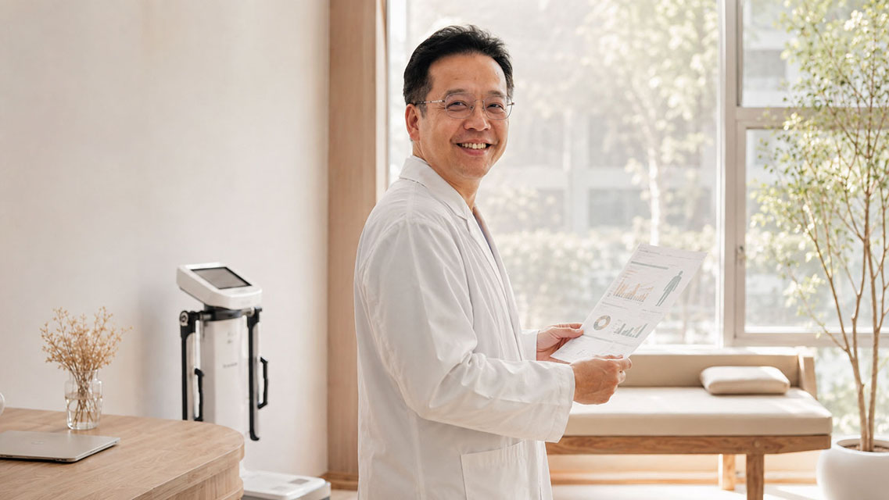

吾青見證
當醫師決定認真對待自己的身體
2026/03/02
林思宏醫師的一年體態重整紀錄
吾青品牌見證｜真實紀錄
有一種人，最難說服自己去看診。
那就是醫師本人。
我是林思宏醫師，婦產科專科醫師，接生超過萬名新生命，陪伴無數女性走過生命中最重要的時刻。但在診間裡最常提醒我的產婦「要好好照顧自己身體」的我，卻在某個時間點發現——我其實並沒有認真對待自己的身體，已經很久了。

起點：學弟的一句話
2025年三月，我回花蓮母校參加校友盃打完籃球，落地，然後就這樣發生了。
阿基里斯腱斷裂。
幫我開刀的是自己的學弟。手術很順利，術後我問了一句：
「我也沒撞到，只是跳起來落地，阿基里斯腱怎麼會這麼輕易就斷了？」
學弟沉默了幾秒，有點不好意思地說：
「學長⋯⋯你太胖了。」
我當時愣了一下。然後覺得：嗯，對，就是太胖了！真的太胖了。
手術完沒多久，我就回到診間繼續看診了——產婦們還在等著我，我不是那種能安心躺著的人。但學弟那句話一直沒消失：該認真處理自己的身體了。
腿斷了動不了，就從內在開始重整。
介入方式：沒辦法運動的整合體態管理
我的介入策略分成三個階段，每一步都有清楚的邏輯。
第一階段｜飲食重整＋醫療輔助介入
很多人以為減重就是少吃多動。但在身體無法運動的前提下，我選擇先從飲食結構下手——不是單純減少熱量，而是重新調整飲食的組成方式，在對的飲食時間著手，去掉宵夜，讓身體從「消耗肌肉」的緊急模式，切換回「燃燒脂肪」的正常代謝狀態。
同步搭配醫療輔助，給身體一個啟動的訊號。
這個階段最困難的不是執行，而是心態的轉換。我知道我是那種「知道所有正確答案，但輪到自己卻很難做到」的人。能撐過來，是因為我選擇用數據說服自己——每隔一段時間看一次身體組成分析，讓數字告訴我身體正在發生什麼，而不是靠感覺撐。數字在動，信心就跟著來了。
第二階段｜功能醫學檢測＋精準營養素補充
體重開始有變化之後，我進入了整個過程中最關鍵、也最常被人忽略的一個環節：功能醫學檢測。說實話，我的基本健康數值其實還不錯。血脂、血糖、肝腎功能——看起來都沒什麼大問題。
但功能醫學要看的不是「有沒有超標」，而是「有沒有在最佳化的區間」。這兩件事差很多。
深度檢測出來之後，我發現幾個可以優化的地方，這些數值沒有一個是「異常」，但放在一起看，就能理解為什麼我一直覺得精神還好、但代謝就是上不來——身體在用一個將就的狀態在運作，而不是真正的高效率。
「健檢正常不代表最佳化。很多人跟我以前一樣，數值都在正常範圍，但其實身體一直在低效率地撐著。」
針對這些缺口，我開始補充對應的功能醫學營養素：
- 維生素D：支撐免疫功能與代謝調節
- 鎂：改善睡眠品質與肌肉恢復
- Omega-3：降低慢性發炎、優化細胞膜功能
- CoQ10：提升粒線體能量產出，讓細胞真正有力氣燃燒
- 肉鹼：協助脂肪酸進入粒線體轉換為能量，加速脂肪代謝
這個階段的改變不是立竿見影的，但這是讓成果能夠持續而不反彈的底層工程。少了這一步，前面的努力很容易白費，體重也很容易回彈。
第三階段｜必麗塑療程，處理最後的頑固脂肪
經過一年的飲食調整與營養介入，我的整體狀態已經明顯改善。診間久久沒見到我的產婦都會「哇」一聲說：「醫生你變瘦了！！」
但我自己知道，身體有些區域的脂肪——好啦，就是肚子——就算代謝好了、飲食對了，依然頑固地留在原地。
這時候，我進行了兩次必麗塑溶脂療程，針對特定部位進行精準處理。
必麗塑的原理是透過特定波長的雷射能量，直接作用於脂肪細胞，讓身體自然代謝排出。我選擇在身體內在狀態調整好之後才進行療程，因為我相信一件事：
「療程是工具，不是捷徑。身體底層的狀態沒有準備好，任何外部介入的效果都會打折。先把內在調好，療程才能發揮它真正的價值。」
目前一年後的成果
經過一年多的持續介入與調整：體重從 120 公斤下降至 98 公斤，減少 22 公斤 體脂率下降 15% 目前仍持續維持調整中！
數字之外，我更在意的是另一件事：身體的感受回來了。
精神變好、睡眠品質提升、思緒更清晰——這些是體重計量不到的改變，卻是我認為最真實的成果。
最後我想跟大家說的話
「我常常跟孕婦產婦說，懷孕要多運動，變胖還不動只會越來越喘；運動不是建議，而是處方！但我自己也是那個拖很久的人。」
「受傷反而讓我停下來，認真去看自己的身體數據。才發現有些東西，其實早就可以更好。」
「體態管理不是為了外表，是為了讓自己在每個年紀——特別是到了現在中年——能夠為未來二三十年存點本，還能有力氣做想做但還沒完成的事。」
── 林思宏醫師
吾青的體態整合方案
我的這段旅程，也是吾青服務的核心概念：
不從外表開始，而是從身體內在的狀態開始。找出失衡的根源，精準介入，讓改變走得穩、走得遠。
無論妳是產後想找回身材的媽媽、發現代謝越來越差的熟齡女性，還是像我一樣發現自己不能再這樣下去了——吾青的整合團隊都能為妳量身規劃，不只是變瘦，而是真正活得更好。
我們一起加油！